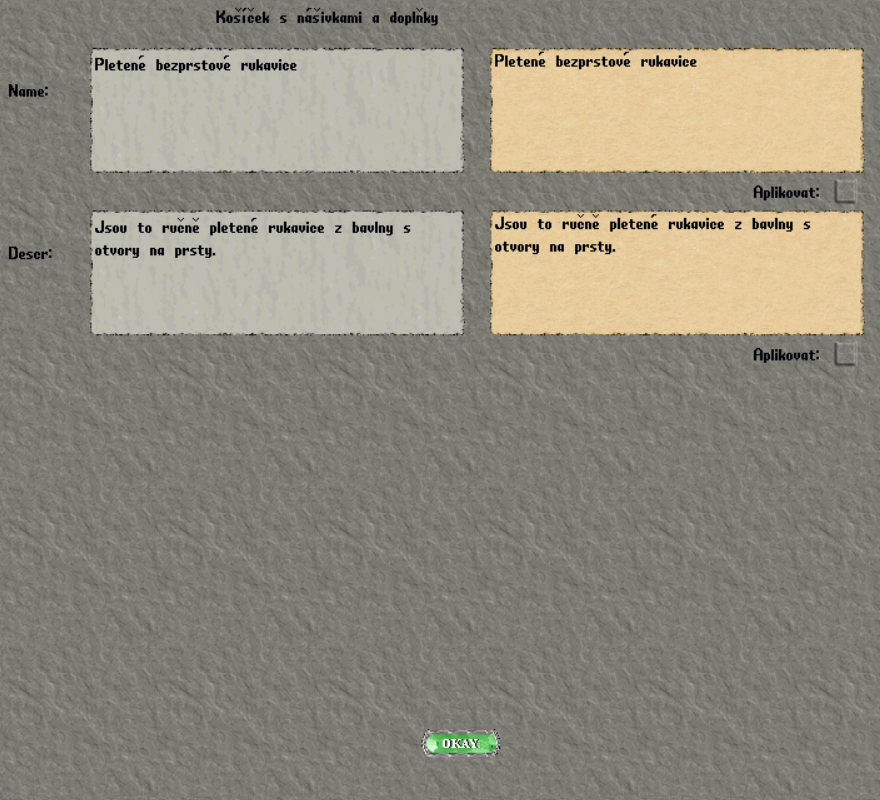

Pletení
1. Vyber si bavlněnou přízi
Vyber si bavlnu z košíčků. Získáš 6 klubek stejné barvy, která odpovídá barvě vybraného košíčku.
2. Nasaď klubko na jehlice
Dvakrát klikni na klubko a potom jako cíl vyber jehlice.
3. Použij kouzlo
Seznam dostupných kouzel i počet klubek potřebných pro jednotlivé výrobky najdeš na ceduli na skříňkách u klubek. Vyber si výrobek a použij odpovídající kouzlo.
Když jehlice začnou plést, zobrazí se jejich emot. Pokud se emot neobjeví, kouzlo nezafungovalo. Postava nemusí být dost zkušená, nebo je formulka napsaná chybně.
4. Pokračuj až do dokončení
- Nech jehlice doplést jedno klubko.
- Nasaď další klubko: dvakrát na něj klikni a vyber jehlice.
- Znovu použij kouzlo.
- Postup opakuj, dokud nevznikne hotový výrobek.
5. Uprav název a popis
Na hotový výrobek použij košíček s nášivkami a doplňky. Otevře se editační okno s poli pro název a popis.
| Pole v okně | Co zadat | Limit |
|---|---|---|
| Name | Vlastní název výrobku. | Nejvýše 80 znaků včetně mezer. |
| Descr | Vlastní popis výrobku. | Nejvýše 240 znaků včetně mezer. |
Povinná součást popisu: spojení ručně pletený ve správném rodě a čísle podle výrobku.
U každého pole, které měníš, zaškrtni Aplikovat. Změny potvrď tlačítkem OKAY.

6. Zkontroluj hotový výrobek
Výrobek si blíže prohlédni a ověř, že se název i popis zobrazují celé. Pokud se text usekl, zkrať ho nebo uprav a zkontroluj znovu.
- Do názvu ani popisu nepatří žádná nevhodná slova.
- Pracuj pouze s materiály a doplňky, které máš k dispozici.
- Mysli na to, co tvá postava zvládne. Drobné nedostatky a chyby jsou hezkým zpestřením.
- Všechna klubka jsou z bavlněné příze. Název a popis tomu musí odpovídat. Nevytváříš kašmírový svetr, tartanový šál ani jiný výrobek neodpovídající dostupnému materiálu a možnostem.